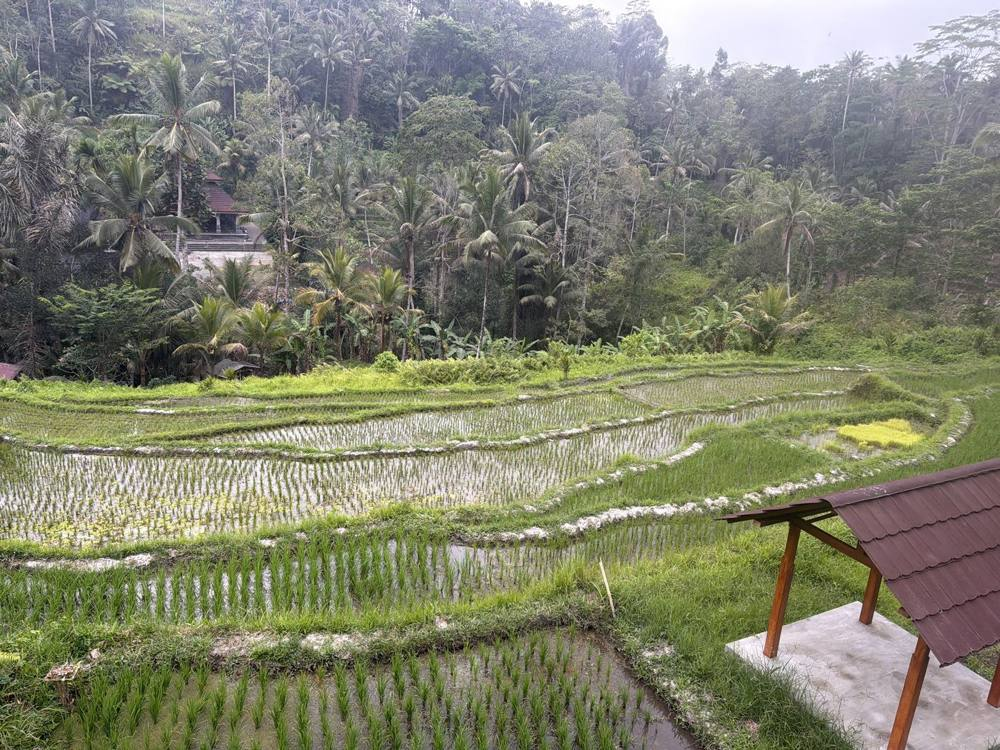
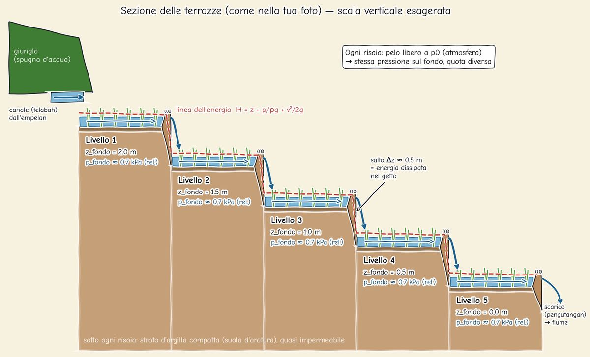

Bali rice terraces (subak)
A thousand-year-old water network with no pumps and no electronics. Every paddy is a tank, and every notch in a bund is a small weir. Open the canal and watch five terraces fill and settle on their own. Then sabotage them.
The physics, in three lines
1 · Each notch is a broad-crested weir. Over a sill the flow goes critical, so the discharge only depends on the head H above the crest:
Q = C · b · √g · H^(3/2), C = (2/3)^(3/2) ≈ 0.542 · Each paddy is a tank (lumped mass balance, with evaporation E ≈ 5 mm/day and percolation q ≈ 1.5 mm/day through the compacted clay):
A · dh/dt = Q_in − Q_out − A·(E + q)Linearise around the steady state and you get a first-order system with time constant τ = A / (dQ/dh) = A·H₀ / (1.5·Q), about 45 minutes for A = 200 m² and Q = 1 L/s. That's the settling you see in the h(t) curves.
3 · Hydrostatics. The free surface sits at atmospheric pressure, so the gauge pressure at the floor is just p = ρ g h ≈ 1000 · 9.81 · 0.07 ≈ 0.7 kPa. Every terrace has the same floor pressure at a different elevation.
Erosion (toy model). Flow over the sill is critical, so u = √(g·2H/3). Bare soil starts eroding above ~0.25 m/s, while stone armour holds up to ~1.5 m/s (assumed). Without the stones, the crest drops and the notch widens over time.

